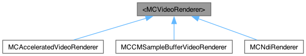

<MCVideoRenderer> Protocol Reference
Inheritance diagram for <MCVideoRenderer>:

Detailed Description
This protocol can be used to implement objects that receive video frames in your applications. Used in MCVideoTrack/addRenderer: to start receiving / video frames from that video track.
/ This handler is called when a new video frame becomes available, either captured or received. / - Parameters: / - frame: A raw video frame.
- (void) didReceiveFrame:(id<MCVideoFrame>)frame;
@end
Audio //////////////////////////////////////////////////////////////////////
/ This protocol can be implemented to receive audio frames from audio tracks. However, / The recommended method to render audio is to use MCAudioPlaback instead. / See MCAudioTrack/addRenderer: to attach an audio renderer.
The documentation for this protocol was generated from the following file:
- objc/MillicastSDK/renderer.h
Generated by